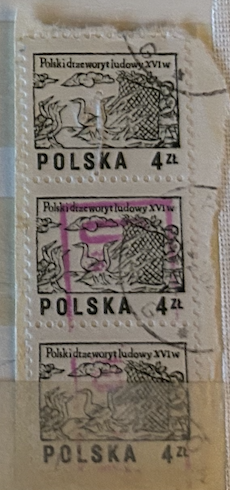
| SOURCE | TITLE| IMAGE MATCH | click to source page |
| www.ebay.com | Poland 1965 WARSAW 700th Anniversary Complete MNH Set SC ... |  |
| www.ebay.com | Poland Stamp Scott #153, Used | eBay | 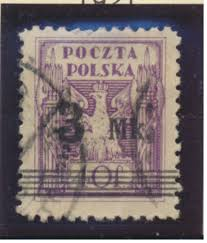 |
| www.hipstamp.com | Poland #2070-2071B 16th Century Woodcuts; Used (1.00 ... | 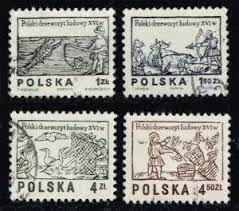 |
| www.mysticstamp.com | 2071A-B - 1977 Poland - Mystic Stamp Company |  |
| www.ebay.com | POL0179 Poland 4 sets art birds fishes fine use | eBay | 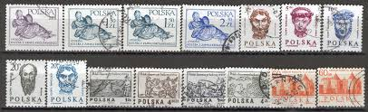 |
| www.amazon.com | Amazon.com: Poland 2537-2538 (Complete.Issue.) 1977 woodcuts ... | 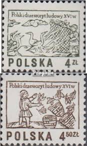 |
| www.alamy.com | Vintage postage stamps from Poland on a white background ... |  |
| www.facebook.com | Why sell non-archival stamp hinges to collectors? | 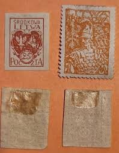 |
| www.ebay.com | Poland/Stamps 1974 used -, Flower Drawings by Stanislaw ... | 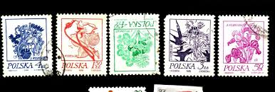 |
| www.ebid.net | Mi 2537: 4 Zl. black-olive Defin.: Polish Folklore: Carvings ... | 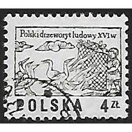 |
| www.hipstamp.com | Poland 1974/77 Scott 2071A used - 4z, wood carvings, Boy ... | 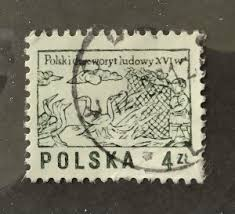 |
| www.buyhungarianstamps.com | B107a Poland - Stamp of 1860 (Used) – Eastern Europe Postage ... | 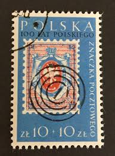 |
| stampphenom.com | Poland 1965 Warsaw, 700th Anniversary – StampPhenom | 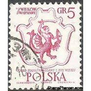 |
| www.alamy.com | Poland stamp hi-res stock photography and images - Page 5 ... |  |
| ittybittystampcompany.com | Poland Scott # 1650-1657 Used – The Itty Bitty Stamp Company | 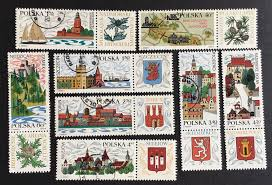 |
| www.youtube.com | Polish Stamps Ep1 - Early Stamps Including Inflations ... | 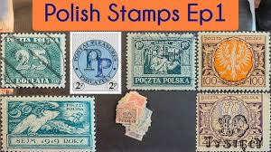 |
| www.shutterstock.com | Poland-circa 1974postage Stamp Printed By Poland Stock Photo ... | 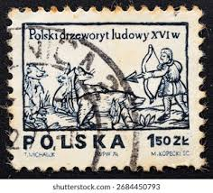 |
| www.etsy.com | 20 POLAND POLISH HISTORY Culture Vintage Used Postage Stamps ... | 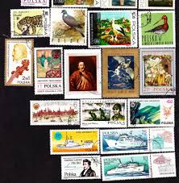 |
| www.mysticstamp.com | 909 - 1943 5c Overrun Countries: Flag of Poland - Mystic ... | 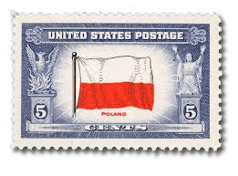 |
| www.flickr.com | great stamp Poland 5 gr Mermaid of Warsaw - coat of arms o ... | 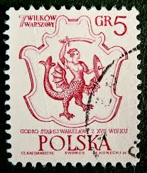 |
| www.amazon.com | Amazon.com: Poland 1727-1729,1738-1739 (Complete.Issue ... | 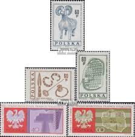 |
| www.youtube.com | Ceny znaczków Polski 1977, znaczki pocztowe 2236 2392 ... | 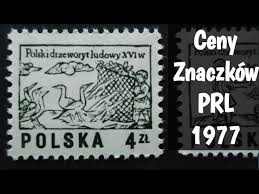 |
| www.vecteezy.com | Page 7 | Socialism History Stock Photos, Images and ... | 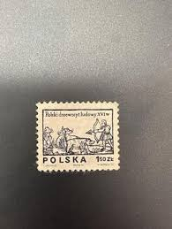 |
| www.mgrove.com | 1360:: Stamps, Poland, 1950, brown 35, searchlight ... | 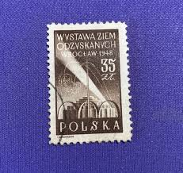 |
| www.stampcommunity.org | Poland Stamps Overprinted P.p.c. Identification Help - Stamp ... | 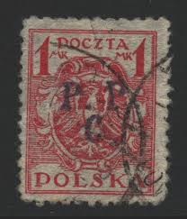 |
| www.jaysmith.com | Jay Smith & Associates: Slania: Poland: Non-Stamp Engravings |  |
| findyourstampsvalue.com | Rarest and most expensive Polish stamps list | 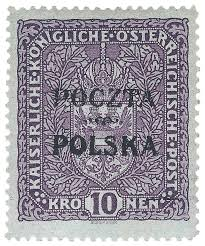 |
| postalmuseum.si.edu | Poland | National Postal Museum |  |
| worldstampsproject.org | Varieties of Polish postage stamps 1918-1939 – World Stamps ... | 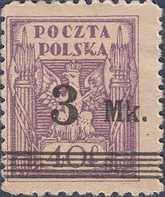 |
| www.buyhungarianstamps.com | 511-516 Poland - 1st Congress of Polish Science (MNH ... | 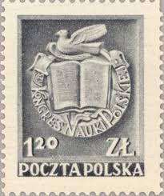 |
| www.leboncoin.fr | Timbres folklore polonais 1974 - Collection | 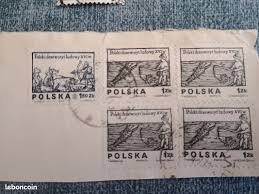 |
| www.allnumis.com | Polecona (1,55 zł.) - Eagle, Coat of arms - Eagle - Poland ... | 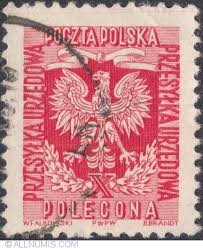 |
| www.ebid.net | Cameroun 1947 - 10c carmine (postage due) - numeral - unused ... | 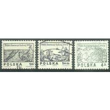 |
| www.postbeeld.com | Stamp 1970, Poland Stamp Days, paintings 8v, 1970 ... | 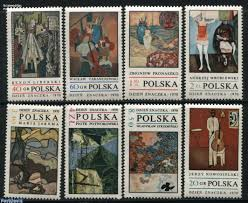 |
| picryl.com | 10 1919 stamps of poland Images: PICRYL - Public Domain ... | 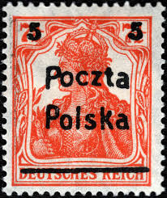 |
| www.hipstamp.com | Poland – 1974 – Set of 6 stamps – SC#'s 2017-2022 - Used ... | 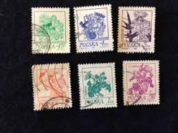 |
| www.istockphoto.com | 30+ Postage Stamp Poland Horse Old Fashioned Stock Photos ... | 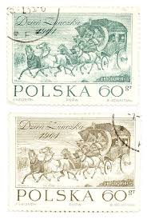 |
| app.biistamp.com | Polish Stamps for Sale - Specialized Price List | Bieniecki ... | 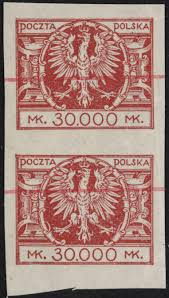 |
| www.freestampcatalogue.com | Stamps from Poland - Freestampcatalogue.com - The free ... | 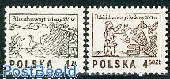 |
| www.pinterest.com | Rarest and most expensive Polish stamps list | 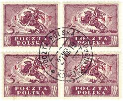 |
| www.lubelskistamps.com | Poland Stamps – Polish Stamp Specialist | 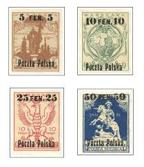 |
| www.123rf.com | POLAND - CIRCA 1974: A Stamp Printed In Poland From The ... | 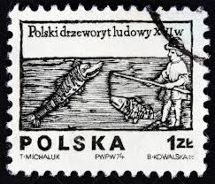 |
| www.facebook.com | What is the value of these older Polish stamps? | 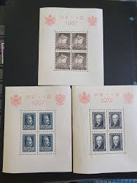 |
| allegrolokalnie.pl | Fi: 2390 2391 Drzeworyt ludowy w XVI w | Warszawa | Kup ... | 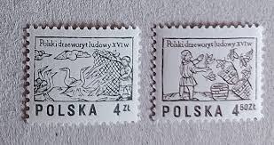 |
| en.wikipedia.org | Postage stamps and postal history of Poland - Wikipedia | 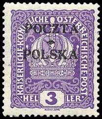 |
| vendora.gr | Γραμματόσημα Πολωνίας 1965 για τα 700… - € 2,75 - Vendora.gr | 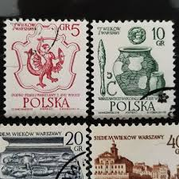 |
| www.smithsonianmag.com | Sarkozy's Not the First World Leader to Collect Stamps | 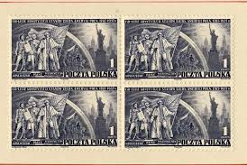 |
| community.postcrossing.com | Stamps in Poland - Mail, stamps & postal info - Postcrossing ... | 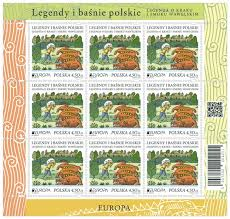 |
| www.flickr.com | Evert van Eck | Flickr | 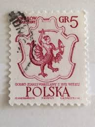 |
| www.reddit.com | Polish-themed stamps from around the world : r/poland | 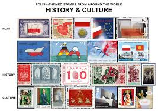 |
| www.old-stamps.com | Polski drzeworyt ludowy XVI W. / Polska 1974 |  |
| www.stampsonstamps.org | Poland | 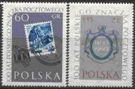 |
| www.cherrystoneauctions.com | U.S. & Worldwide Stamps; The Kaunas Collection Lithuania ... | 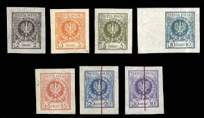 |
| app.biistamp.com | Polish Stamps for Sale - Standard Price List | Bieniecki ... | 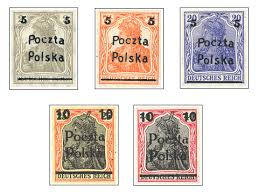 |
| www.alamy.com | Woodcut from the 16th century hi-res stock photography and ... | 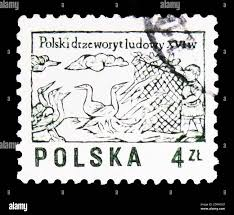 |
| en.todocoleccion.net | sello polonia, 60 gr, jan dlugosz, año 1964, si - Buy ... | 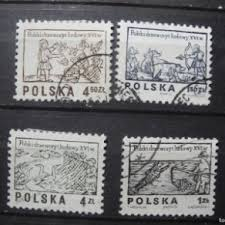 |
| www.ebay.com | 15 pre war Poland polish used stamps crowned national eagle ... | |
| hca.gilead.org.il | Andersen's Fairy Tales on Stamps: 1987: Poland | |
| worldstampsproject.org | Poland-1919-postage-stamp-88III – World Stamps Project | |
| www.dreamstime.com | Plants Animals Cartoon Editorial Images: Over 8 Stock Photos ... |